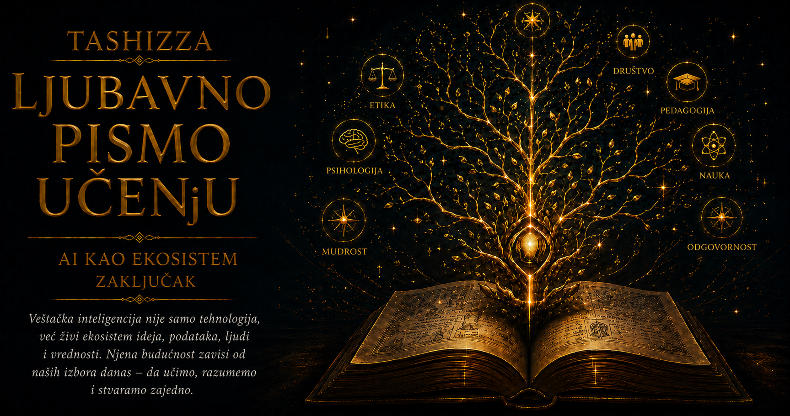

Ljubavno pismo učenju

Veštačku inteligenciju često zamišljamo kao jedan moćan program, jedan algoritam ili jednu mašinu koja je stekla sposobnosti nekada pripisivane isključivo čoveku. Takva slika privlači pažnju, ali zaklanja način na koji inteligentni sistemi zaista nastaju i deluju. Iza svakog njihovog odgovora nalazi se čitava mreža međusobno zavisnih elemenata: računarska arhitektura, programski kod, matematički modeli, podaci, ljudsko znanje, povratne informacije, ciljevi, pravila upotrebe i društveno okruženje. Veštačka inteligencija zato se najpotpunije razume kao ekosistem u kojem sposobnost celine izrasta iz odnosa među brojnim delovima.
Četiri prethodne priče pružile su nam ključne perspektive za sagledavanje tog ekosistema. Alan Tjuring otvorio je pitanje prema kojim znacima prepoznajemo inteligenciju i može li se ona proučavati kroz ponašanje mašine. Norbert Viner pokazao je da prilagođavanje nastaje kroz povratnu spregu, kada posledica delovanja postaje informacija za sledeći korak. Džon fon Nojman dao je digitalnom svetu arhitekturu u kojoj ista mašina menja svoju namenu zahvaljujući programu sačuvanom u memoriji. Stjuart Rasel i Piter Norvig povezali su rasute oblasti veštačke inteligencije kroz pojam agenta koji opaža okruženje, razmatra mogućnosti, deluje i uči iz onoga što njegovo delovanje pokrene.
Posmatrane zajedno, ove ideje otkrivaju tok koji povezuje pitanje, strukturu, proces i svrhu. Tjuring nas upućuje na ponašanje koje želimo da razumemo, fon Nojman na materijalne i simboličke uslove koji omogućavaju da se ono ostvari, Viner na kruženje informacija zahvaljujući kojem se sistem prilagođava, dok Rasel i Norvig pokazuju kako se opažanje, zaključivanje, učenje i delovanje mogu objediniti oko određenog cilja. Nijedna od tih perspektiva sama ne obuhvata celinu, ali se njihovim povezivanjem pojavljuje jasnija slika inteligentnog sistema kao učesnika u neprekidnoj razmeni sa svetom.
Fon Nojmanova arhitektura obezbedila je prostor u kojem ideja može postati izvršiva. Program i podaci smešteni su u zajednički digitalni medij, pa jedna fizička mašina može preuzimati mnoštvo različitih uloga. Isti računar može analizirati medicinske snimke, prevoditi jezike, upravljati robotom, predviđati potrošnju energije ili pomagati učeniku da razume složenu lekciju. Ta univerzalnost predstavlja tlo ekosistema: sposobnosti više ne moraju biti trajno ugrađene u oblik uređaja, jer se mogu razvijati, menjati i povezivati kroz softver.
Sama mogućnost izvršavanja programa ipak ne donosi prilagođavanje. Tu fon Nojmanova arhitektura ulazi u stvaralački odnos sa Vinerovom povratnom spregom. Model dobija podatke, proizvodi rezultat, poredi ga sa primerom, očekivanjem ili reakcijom iz okruženja, a zatim menja svoje parametre ili buduće ponašanje. Svaki krug ostavlja trag u sledećem, pa se učenje oblikuje kao dug niz pokušaja, merenja, korekcija i novih pokušaja. Inteligentan sistem razvija svoje sposobnosti upravo kroz tu uređenu osetljivost prema razlici između nameravanog i postignutog.
Raselov i Norvigov pojam agenta daje ovoj kružnoj dinamici širi smisao. Agent opaža određeni deo sveta, raspolaže ograničenim znanjem, bira radnju prema postavljenom merilu uspeha i potom prima nove informacije iz promenjenog okruženja. Njegova racionalnost zavisi od kvaliteta opažanja, pouzdanosti modela, vremena raspoloživog za odluku i posledica koje ume da predvidi. Time se pažnja pomera sa izdvojene sposobnosti na ponašanje čitavog sistema, jer tačan odgovor u jednom trenutku može postati pogrešan potez kada se zanemare okolnosti, drugi učesnici ili dugoročni učinci.
Tjuringovo pitanje u takvom ekosistemu dobija novu dubinu. Ponašanje koje ostavlja utisak inteligencije nastaje iz koordinacije mnogih procesa koje korisnik uglavnom ne vidi: predstavljanja jezika, prepoznavanja obrazaca, procene verovatnoće, pretraživanja mogućnosti, izbora odgovora i korišćenja konteksta. Razgovorna uverljivost može biti važan dokaz razvijene sposobnosti, ali sama ne otkriva kako je rezultat nastao, koliko je pouzdan niti gde se nalaze granice sistema. Susret sa mašinom zato zahteva istovremeno uvažavanje onoga što ona ume i pažljivo ispitivanje onoga što njeno ponašanje još ne može da potvrdi.
Ekosistemski pogled pokazuje i da podaci nisu pasivna sirovina oslobođena ljudske istorije. Oni nastaju izborom onoga što će biti zabeleženo, imenovano, razvrstano i sačuvano, pa u sebi nose trag jezika, kulture, institucija, ranijih odluka i društvenih nejednakosti. Model iz tih zapisa usvaja pravilnosti, dok njegovi rezultati zatim utiču na ljude i stvaraju nove podatke. Preporuka menja ono što korisnik vidi, viđeni sadržaj menja njegove reakcije, a reakcije postaju osnova budućih preporuka. Vinerova petlja tada obuhvata čitavo društvo, jer algoritam oblikuje upravo onu stvarnost iz koje nastavlja da uči.
U takvoj povratnoj sprezi mogu nastati dragoceni krugovi razvoja. Sistem koji dobija pažljive ispravke postaje korisniji, korisnici uz njegovu podršku rešavaju složenije probleme, a nova iskustva otkrivaju mogućnosti za dalje unapređenje. Ista struktura može, međutim, pojačavati greške, predrasude i štetne podsticaje. Ako platforma uspeh meri isključivo vremenom provedenim uz sadržaj, snažne emocionalne reakcije mogu postati poželjan rezultat bez obzira na njihov uticaj na čoveka. Dobro podešena petlja tada veoma uspešno ostvaruje suviše usko ili pogrešno izabran cilj.
Zbog toga se u središtu ekosistema nalazi pitanje koje ne može rešiti ni najveća računarska snaga: ko određuje svrhu sistema i prema kojim vrednostima procenjuje njegove posledice? Fon Nojmanova arhitektura omogućava programu da se izvršava, Vinerova povratna sprega da se njegovo ponašanje koriguje, a agentni okvir da se radnje usmere prema cilju. Ipak, nijedan od tih mehanizama samostalno ne određuje da li izabrani cilj doprinosi znanju, pravdi, bezbednosti i ljudskom dostojanstvu. Tehnička sposobnost uvećava domet ljudske namere, pa sa njom raste i odgovornost za ono što je pretvoreno u merilo uspeha.
Ekosistem veštačke inteligencije zato obuhvata mnogo više od istraživača i programera. U njegovom razvoju učestvuju stručnjaci za jezik, obrazovanje, pravo, medicinu, filozofiju, psihologiju, umetnost, bezbednost i društvene nauke, zajedno sa ljudima na čije živote sistemi neposredno utiču. Lekar može prepoznati posledicu koju statistička tačnost ne pokazuje, nastavnik objasniti razliku između gotovog odgovora i stvarnog razumevanja, lingvista otkriti nijansu izgubljenu u podacima, dok korisnik može uočiti prepreku koju projektant nikada nije iskusio. Raznolikost perspektiva predstavlja važan izvor otpornosti, jer omogućava da celina vidi više od bilo kog svog dela.
Ovaj način razmišljanja menja i naš odnos prema učenju. Veštačka inteligencija ne usvaja se kao zatvoren skup alata čije se komande jednom nauče i zatim mehanički ponavljaju. Ona zahteva sposobnost povezivanja pitanja iz različitih oblasti: kako je problem predstavljen, kakvi podaci oblikuju model, na koji način se meri greška, kakvu povratnu informaciju sistem prima, prema čijem cilju deluje i ko snosi posledice njegove odluke. Učenik koji razume te odnose može da bira alate sa više razboritosti, proverava njihove rezultate i prepozna trenutak u kojem je potrebno ljudsko znanje, iskustvo ili moralni sud.
U obrazovanju, integracija Tjuringovih, Vinerovih, fon Nojmanovih, Raselovih i Norvigovih ideja otvara prostor za saradnju u kojoj mašina proširuje mogućnosti čoveka, a čovek zadržava odgovornost za smisao procesa. Inteligentan sistem može prilagoditi objašnjenje, ponuditi drugačiji primer, otkriti obrazac u greškama i omogućiti učeniku da istražuje tempom koji mu odgovara. Nastavnik pritom ostaje nezamenljiv kao poznavalac razvoja, odnosa, motivacije i životnog konteksta, jer obrazovanje obuhvata daleko više od isporuke tačnog odgovora. Najvrednija upotreba tehnologije pojavljuje se kada povratna sprega osnažuje učenikovu samostalnost i produbljuje njegovu sposobnost rasuđivanja.
Slična integracija menja medicinu, nauku, umetnost i svakodnevni rad. Programabilna mašina izvršava složene postupke, modeli uočavaju pravilnosti u ogromnim količinama podataka, povratna sprega omogućava prilagođavanje, a agentni okvir povezuje opažanje i delovanje. Čovek zatim unosi razumevanje okolnosti, procenjuje prihvatljiv rizik, tumači izuzetke i odlučuje koje vrednosti moraju ostati sačuvane. Najplodnija saradnja nastaje kada se računarska brzina, doslednost i širina pretrage sjedine sa ljudskom sposobnošću da razume značenje, preuzme odgovornost i promeni cilj kada posledice pokažu da je početna zamisao bila nedovoljna.
Nijedan ekosistem nije nepomična zbirka svojih članova. Svaka promena u jednom delu preobražava odnose u celini: snažniji modeli zahtevaju više računarske energije, veće količine podataka otvaraju pitanja privatnosti, šira primena menja zanimanja i obrazovanje, dok odluke korisnika određuju koje će se mogućnosti dalje razvijati. Zbog toga budućnost veštačke inteligencije neće oblikovati isključivo ono što mašine budu mogle da učine. Oblikovaće je i ono što će društvo smatrati vrednim, dopuštenim, pravednim i dostojnim poverenja.
Ekosistemska perspektiva oslobađa nas i od predstave da istoriju znanja grade usamljeni geniji čije se ideje pojavljuju dovršene. Tjuringovo pitanje dobilo je nove puteve primene zahvaljujući računarskoj arhitekturi, kibernetičkoj povratnoj sprezi, razvoju algoritama, podacima i radu generacija istraživača. Fon Nojmanova mašina postala je mnogo više od računskog uređaja kada su je programi povezali sa jezikom, slikom i svetom, dok su Vinerove petlje dobile nove razmere u sistemima sposobnim da uče iz miliona interakcija. Raselova i Norvigova mapa zatim je omogućila da se ti doprinosi sagledaju kao delovi zajedničkog prostora istraživanja.
Veštačka inteligencija tako postaje izuzetno snažan primer konkreativnosti znanja: svaka ideja ulazi u odnos sa drugima, menja njihovu primenu i omogućava pojavu sposobnosti koje nijedna disciplina nije mogla sama da proizvede. Njena budućnost zavisiće od kvaliteta tih odnosa, od otvorenosti prema ispravci i od spremnosti da se tehnički napredak ne odvaja od pitanja ljudske svrhe. Ekosistem napreduje kada među njegovim učesnicima kruže pouzdane informacije, kada se greške prepoznaju pre nego što postanu obrasci i kada moć delovanja prati razvijena svest o posledicama.
Najdublja pouka prethodnih poglavlja zato se nalazi u njihovom zajedničkom dejstvu. Tjuring nas je naučio da hrabro preispitamo granice inteligencije, fon Nojman da zamisao pretvorimo u izvršivu strukturu, Viner da osluškujemo odgovor sveta, a Rasel i Norvig da sposobnosti povežemo sa okruženjem, ciljem i odgovornošću. Kada te ideje deluju zajedno, veštačka inteligencija prestaje da bude tajanstvena sila smeštena nasuprot čoveku i postaje prostor saradnje koji smo nasledili, koji svakodnevno oblikujemo i za čije ćemo posledice zajedno odgovarati.